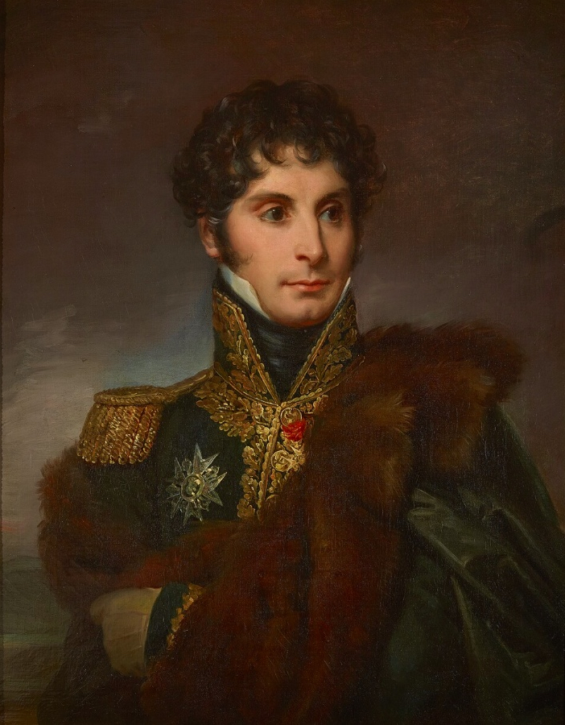

보로디노 에필로그 (1) - 우울한 승자
게시: 2020-10-19T06:30:01+09:00
전투가 끝난 어두운 보로디노 벌판은 그야말로 한 폭의 지옥도였습니다. 눈에 보이는 온 들판에 말과 사람의 시체와 부서진 장비들이 가득했는데, 대부분의 사상자는 포격에 의해 발생했기 때문에 그 시체들의 모습은 끔찍하기 짝이 없었습니다. 창자가 빠져나온 채로 비틀거리며 자꾸 일어서려는 말, 두동강이 난 병사들, 머리가 없는 시신들... 아직 숨이 붙어있는 부상자들이 내는 비명 소리와 신음소리는 살아남은 병사들의 신경을 긁었습니다. 먹을 것도 가져오지 못한 군대에게 붕대와 의약품, 들것 등을 기대할 수는 없었습니다. 여기서 심한 부상을 당한 병사들은 대부분 긴 고문에 의한 사형 선고를 당한 것이나 다름없었는데, 어떤 부상병들은 자기를 총으로 쏘아 죽여달라고 흐느끼기도 했지만 어떤 이들은 어떻게든 살겠다고 피를 철철 흘리면서도 어디론가 기어 갔습니다. 그러나 이들이 어디로 기어가야 살 수 있는지는 아무도 몰랐습니다. 다행인지 불행인지 이 전투의 부상병들 중에 다리에 총을 맞거나 어깨를 총검에 찔리는 등의 가벼운 부상자는 다른 전투에 비해 그리 많지 않았습니다. 대부분의 부상자들은 대포알에 얻어맞거나 지근거리에서 총을 맞았기 때문이었습니다. 전투의 격렬함과 이 전투에서 포병대가 어떤 역할을 했는지 보여주는 결과였습니다. 보로디노 마을의 콜로츠코예(Kolotskoie) 수도원에 설치된 야전 병원은 일찌감치 부상병으로 가득 차서 어둠이 깔리자 더 이상 부상병을 야전 병원으로 후송하는 작업은 중단되어 버렸습니다. 어차피 병원으로 실려와도 받을 치료는 뻔했습니다. 그냥 팔다리를 자르거나, 총알을 빼낸 뒤 상처를 묶고 붕대를 감는 것 뿐이었습니다. 그런 식으로 무성의한 '치료'를 받은 부상병들은 진흙바닥에 눕든 앉든 알아서 하도록 방치되었습니다. 이런 식의 치료나마 받은 병사들은 그나마 행운아였고, 병원에 도착한 많은 부상병들이 아무런 치료를 받지 못한 채 피를 흘리다 죽었습니다. 프랑수아(Francois)라는 이름의 대위도 부상을 입고 실려왔었는데, 이 대위는 운이 좋은 편이었습니다. 충직한 그의 하인이 그를 버리지 않고 어떻게든 물과 음식을 구해서 그를 먹여 살렸기 때문입니다. 프랑수아 대위의 기록에 따르면 자신과 함께 이 수도원에 버려진 약 1만명의 부상병들 중 4분의 3은 전투 이후 열흘 안에 다 죽어버렸는데, 감염과 출혈로 죽은 사람도 많았지만 그에 못지 않은 숫자가 굶어 죽었습니다. 승리한 그랑다르메 부상병들의 운명이 이러했으니 패배한 러시아군 부상병들의 사정은 더욱 딱했습니다. 후퇴한 러시아군은 러시아 부상병들을 전투 현장에서 인근의 작은 마을인 모즈하이스크(Mozhaisk)까지 데려가 그곳의 가옥이나 건물 등에 아무렇게나 버려두었는데, 이틀 뒤에 거기까지 프랑스군이 진주해서 보니 이미 절반이 굶주림과 갈증으로 숨진 뒤였습니다. 전투 현장에서 특히 끔찍했던 곳은 라에프스키 보루의 내외부였습니다. 후방 지원 부대로서 이곳에 진격했던 폴란드 여단의 한 장교는 이렇게 기록을 남겼습니다. "보루 주변은 상상할 수 있는 것 이상의 공포를 초월하는 모습이었다. 이 보루로 향하는 접근로와 해자, 토루 등은 모조리 시체와 곧 시체가 되려는 부상병들로 뒤덮혀 있었다. 뒤엉킨 시신들은 평균 6~8명 정도의 두께로 겹겹이 쌓여 있었다. 보루 안쪽에는 러시아 수비군이 열을 맞추어 서있다가 마치 큰 낫으로 한꺼번에 베인 듯한 모습으로 쓰러져 있었다."
라에프스키 보루가 이런 상태였기 때문에 아무도 거기 있으려 하지 않았습니다. 어차피 러시아군은 멀리 후퇴했기 때문에 거기에 보초병을 둘 필요도 없었고, 실은 보초병을 둘 여력도 없었습니다. 그래서, 그날 밤 일부 러시아 기병들이 상황 파악을 위해 어둠을 틈타 몰래 라에프스키 보루 내부까지 들어왔을 때도 아무도 그 사실을 몰랐습니다. 이 사실을 이용하여 나중에 쿠투조프는 '러시아군은 방어선을 지켜냈고 프랑스군을 그날 아침 위치로 모두 격퇴했다'라고 보고서에 쓸 수 있었습니다. 물론 실제로는 러시아 정찰병들도 라에프스키 보루의 끔찍한 시체더미에 질려서 곧 그 자리에서 물러났습니다.
이렇게 시체가 넘쳐났지만 물론 살아남은 병사들이 더 많았습니다. 전투가 끝난 벌판엔 언제나 승전군 병사들과 인근 마을 주민들이 시체들로부터 뭔가 귀중품을 훔치려고 기웃거리는 것이 당시 전쟁터의 상식이었는데, 9월 7일 밤의 광경은 사뭇 달랐습니다. 이날 시체를 뒤지는 사람들은 그랑다르메의 병사들 뿐이었고 현지 주민들은 전혀 없었습니다. 러시아군이 모조리 소개시켰으니까요. 그리고 이들이 찾는 것은 은화나 장교의 검, 피스톨 같은 것이 아니었습니다. 이들은 무엇보다 먹을 것과 마실 것을 찾고 있었습니다. 운이 좋은 병사들은 귀릿가루 같은 것을 시체의 잡낭에서 찾아낼 수 있었는데, 모두 러시아군 시체에서였습니다. 그랑다르메 병사들의 시체에서는 간혹 말라 비틀어진 빵껍질 따위가 나왔습니다. 충직한 병사들은 역시 살아남은 장교들과 부사관들 주변에 모여 들었고, 장교들과 부사관들은 부대의 중심인 부대깃발 주변에 모여들었습니다. 이들은 조용히 부대깃발을 지키며 모여 앉았는데, 이렇게 모인 장교들과 병사들은 살아남았다는 기쁨과 함께 얼마나 많은 전우들이 이 자리에 모이지 못했는지를 파악하고는 경악하고 낙담했습니다. 당시 나폴레옹의 참모진에 소속되어 있던 세귀르(Philippe Paul, comte de Ségur) 장군의 기록에 따르면 이렇게 살아남은 병사들은 시체 천지의 지옥도 속에 주저 앉은 상태에서도 군기를 유지하고 있었습니다. 심지어 일부 부대는 이런 와중에 나폴레옹이 세귀르를 포함한 참모들에게 둘러싸여 근처를 지나가자 늘상 했던 것처럼 '황제 폐하 만세'를 외치기도 했습니다. 그러나 그런 환호 소리는 드물었습니다. 세귀르의 판단에 따르면 이는 그랑다르메 병사들이 열정이 넘치기도 했지만 똑똑했기 때문이었습니다. 이들은 이 참상 속에서 이 전투의 의미와 향후 자신들의 미래가 어떻게 될 것인지를 계산하고 있었습니다.

(전에 소개한 세귀르 백작의 다른 그림입니다. 여기서는 더 미남으로 그려 놓았네요. 그는 1780년 생인데 사망한 것은 무려 1873년으로서 무려 93세까지 장수했습니다. 그러니까 나폴레옹을 따라 모스크바까지 갔던 사람이 나폴레옹의 조카가 1871년 프로이센에게 포로가 되고 파리가 함락되는 꼬락서니까지 본 것입니다.) 장교들은 무엇보다 포로로 잡은 러시아군의 수가 너무 적은 것에 놀랐습니다. 유럽에서의 전투 목적은 더 많은 적을 죽여 없애는 것이 아니라 적에게 패배를 인정하도록 강요하는 것이었고, 따라서 얼마나 큰 승리를 거두었느냐는 전장에 널린 적의 시체 수가 아니라 뺴앗은 군기와 대포의 수, 그리고 붙잡은 포로의 수로 평가되었습니다. 승패가 명확해진 다음에는 구태여 싸우다 죽을 이유가 없었고 항복은 수치가 아니었습니다. 그런데 보로디노에서는 달랐습니다. 적의 시체가 많다는 것은 아군의 대승이 아니라 적의 용기를 증명할 뿐이었습니다. 이렇게 처첨하고 우울한 승리를 거둔 병사들의 대부분은 부족한 배급이나마 마지막으로 받은 것이 2일 전이었기 때문에 무척 굶주린 상태였습니다. 이들은 러시아군의 시체에서 건진 귀릿가루나 쓰러진 말의 고기로 굶주린 배를 채우려 했는데, 그것도 쉽지 않았습니다. 땔감이 없었기 때문이었습니다. 모든 면에서 일반 군단병보다 배급 상태가 좋았던 고참 근위대의 한 장교에 따르면 고참 근위대도 그날 밤은 불을 피우지 못하고 축축한 진흙 위에서 그대로 자야 했습니다. 그나마 화약과 버려진 머스켓 소총이 많았기 때문에, 잘 타지 않는 재료지만 머스켓 소총의 개머리판이나 부서진 포가를 땔감으로 써서 일부 병사들은 불을 피웠습니다. 그러나 여전히 저녁밥은 쉽지 않았습니다. 깨끗한 물이 없었기 때문이었습니다. 전투 현장을 흐르는 콜로차 강이나 카미온카 개천, 세메오노브카 개천 등은 시체에서 펑펑 쏟아진 피로 더러워진 상태였습니다. 결국 병사들은 그렇게 피가 섞인 물로 수프를 끓여야 했습니다. 보통 승전을 거둔 밤이면 아무리 피곤하더라도 병사들은 그날 살아남았다는 기쁨에 온갖 무용담을 지어내서라도 늘어놓기 마련이었습니다. 그러나 잘 타지 않는 머스켓 개머리판으로 만든 빈약한 모닥불을 둘러싼 병사들은 착 가라앉은 분위기였고 웃고 떠드는 사람은 없었습니다. 나폴레옹은 그날 밤 야전 텐트에서 저녁을 들었고, 이 자리에는 그의 심복 중 심복인 베르티에와 다부를 불렀습니다. 이들은 모두 이날 그랑다르메가 대승을 거두었다고 말했지만, 나폴레옹은 무척 우울한 얼굴이었고, 별로 먹지도 않았습니다. 이건 꼭 그의 건강이 좋지 않았기 때문만은 아니었습니다. 그의 시종인 콩스탕(Constant)에 따르면 그날 밤 나폴레옹은 침상에서도 거의 잠을 자지 못했고, "Quelle journée!" (What a day, 엄청난 하루였어) 라고 반복해서 탄식했다고 합니다. 그러나 이날 밤까지만 해도 나폴레옹은 이날 전투에서 그의 군대가 어느 정도의 피해를 입었는지 제대로 알지 못했습니다. Source : 1812 Napoleon's Fatal March on Moscow by Adam Zamoyski
en.wikipedia.org/wiki/Battle_of_Borodino
napoleonistyka.atspace.com/Borodino_battle.htm